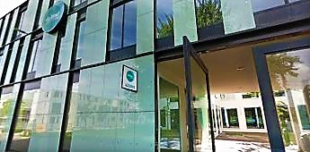

The reason that I chose this education is, because I always watched my brothers how they programmed. My brother also made a website for someone he knew. I came to his room and saw him programming. When I sat next to him, I found it very interesting.
When there was a day at Davinci college where we would get a training from a teacher who gave lessons in application and media developer. Me and a good friend of mine, went there and really enjoyed it and learned a lot of new things. Since that day I started to find it more and more interesting and started to make a personal website in English at home. That is also my motivation to be here. The reason I stay motivated is because I got my brothers who program and also because I really enjoy it.
I am also willing to work on assignments for my study outside school. I would like to improve myself to be able to find my mistakes and also to be able to solve them. Also I would like to know the code I have to write for my website. I don't want to use Internet for things I don't know. I just want to know it!
